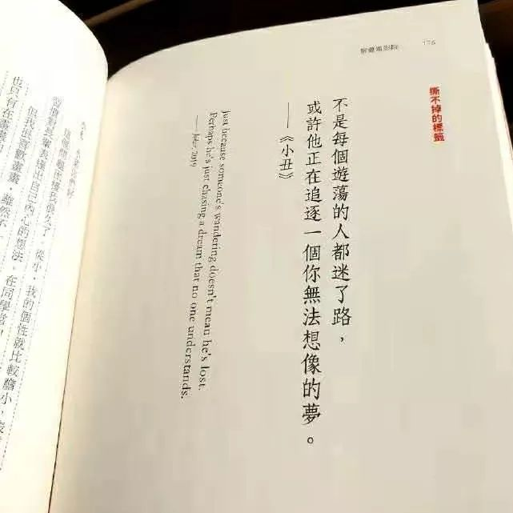

为吃火锅强说愁
原文链接 备份链接 2020年2月12日。 农历正月十九。 武汉封城第廿一天。 天门封城第二十天。 今早没敢发给你看的，就是这个视频。——可别怪我咯，谁让他们这时候放出来。要我说，陈导团队也万万没料到，这年头居然会灾到连一顿像样的火锅都 …

2020年2月13日。
农历正月二十。
武汉封城第廿二天。
天门封城第廿一天。
噩梦中醒来，天还没亮。想爬起来写点什么，环顾四周，却一阵哆嗦。有一种很空茫、无助、虚弱、恐惧混合的感觉。除了小时候经常会有，青春期后就只出现在噩梦醒来后的瞬间了。小时候是很胆小，却不会表现出来让人察觉的那种小孩，容易胡思乱想自个把自个儿吓得半死。初中也蛮懦弱，高中才逐渐成熟起来。尤其是学了马克思主义哲学原理，才真正认识到自己与世界的关系，从此对无知的畏惧也变得坦然起来。成长过程中又不断通读儒释道等哲学经典，尤其学到《金刚经》，更有一种顿悟之感。此刻我理应是心无所惧的，但回想那种让我惊慌的感觉，它到底是什么呢？
死亡？不是，我无数次思考过。肉体于我而言只是工具和载体，它的消亡不是我的损失，是活人的损失。“人生到处知何似，应似飞鸿踏雪泥”。我也并没有“一生中必须要完成的**件事情”的遗憾。
疾病？“吾有大患及吾有身”。只有一种情况会让我痛苦，那就是生活无法自理。其他情况皆可坦然面对。如此，也仅是痛苦，并非恐惧。
穷困？ 人生在世钱财开路，没毛病。但信息时代，已经基本上解决了大部分人类的生存问题，目前存在的只是质量问题而已。量入为出开源节流，穷有穷的活法富有富的活法。只要你不被消费主义洗脑裹挟，仍可以活得潇洒自在。更何况生死有命富贵在天，未来不出意外肯定会从价钱导向过渡到价值（意义）导向。
孤老？如果还能像这样写一些废话，如果拿起相机还有按下快门的冲动，如果豆瓣上还标有未看的书和剧，如果今夜还能安睡明天太阳照常升起，那我完全可以习惯这种状态。
我反复想，那种惊慌的状态，可能是因为我还没有准备好。如果我能做最坏的打算，抱最好的希望，那么任何东西都伤不了我。


水妈
长按二维码向我转账
受苹果公司新规定影响，微信 iOS 版的赞赏功能被关闭，可通过二维码转账支持公众号。
原文链接 备份链接 2020年2月12日。 农历正月十九。 武汉封城第廿一天。 天门封城第二十天。 今早没敢发给你看的，就是这个视频。——可别怪我咯，谁让他们这时候放出来。要我说，陈导团队也万万没料到，这年头居然会灾到连一顿像样的火锅都 …
原文链接 备份链接 2020年2月9日。 农历正月十六。 武汉封城第十八天。 天门封城第十七天。 今天居然没有被社区宣传疫情的大喇叭吵醒，一觉安稳睡到了10点半。而我的床丝毫没有想放我走的意思。只好翻身，背对阳光，摸出手机。并不饿，却非常 …
原文链接 备份链接 2020年2月6日。 农历正月十三。 武汉封城第十五天。 天门封城第十四天。 闹哄之后，豆瓣日记今天被暂停使用了。这个消息居然在豆瓣引发了斯德哥尔摩综合症般的辩论。世风日下，文青们都被训练得在大是大非面前排队站位了。豆 …
原文链接 备份链接 （期待你明天的乱炖） 2020年2月5日。 农历正月十二。 武汉封城第十四天。 天门封城第十三天。 按这个新冠病毒14天的潜伏期上限算，今天我们终于可以嘘口气，以示自己解除隐患了。上午还跟伯伯说，我们要不要喝点酒庆祝一 …
原文链接 备份链接 2020年2月4日。 农历正月十一。 武汉封城第十三天。 天门封城第十二天。 今天报道一名叫何辉的武汉医护接送车队志愿者染病身故的消息，几经辟谣，仍未反转——志愿者何辉终是走了，只不过不是网传照片上的那位。他是英雄吗？ …